Due: Thursday, April 11, 20002.
Note: In the following, PM denotes projection onto the nullspace
of the matrix M. If M has full row rank, then PM is given by
PM = I - MT (MMT)-1 M.
Note that if M is a m x n matrix then PM is an n x n
matrix.
- 1.
- Consider the linear programming problem (P)
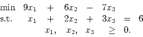
Assume the current point is e=(1,1,1)T.
Calculate the affine descent direction -PAc and the centering direction
PAe. We wish to move in the direction
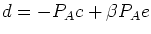
for some
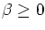.
Show that by choosing 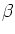
appropriately, we can find
a steplength 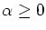
such that 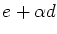
is optimal for
the linear program.
- 2.
- Given two n-vectors s and x, define
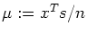.
Let X and S be n x n diagonal matrices, with Xii=xi
and Sii=si for 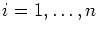.
For n=2, find two vectors x>0 and s>0 such that
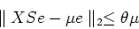
is not satisfied for any
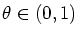.
- 3.
- Wright, Chapter 2, Question 10, page 47.
- 4.
- Wright, Chapter 2, Question 12, page 47.
- 5.
- Let s=c-ATy. Show that
PADDs=PADDc for any positive
diagonal matrix D, provided A has full row rank.
- 6.
- Wright gives a formula for the direction in the
primal variables, 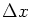,
in equation (1.25c).
Show that, if
D=X1/2S-1/2, then this direction is equal to
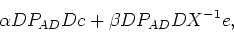
for some scalars 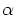
and ,
provided rc=0 and rb=0.
Show that this expression can be simplified slightly to
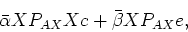
if the iterate is perfectly centered, that is, if 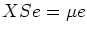
for 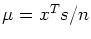.
Here, 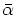
and 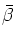
are scalars that may differ
from
and .
(You may assume that AD has full row rank and that AD2AT is
invertible.)
| John Mitchell |
| Amos Eaton 325 |
| x6915. |
| mitchj@rpi.edu |
| Office hours: Wednesday: 10am - 12 noon. |
John Mitchell
2002-04-09